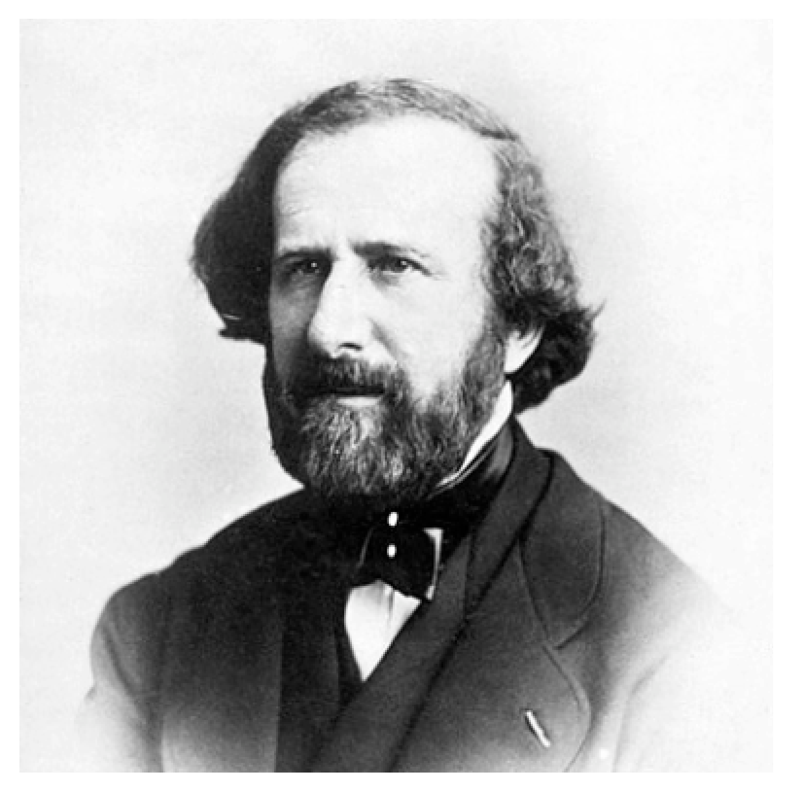
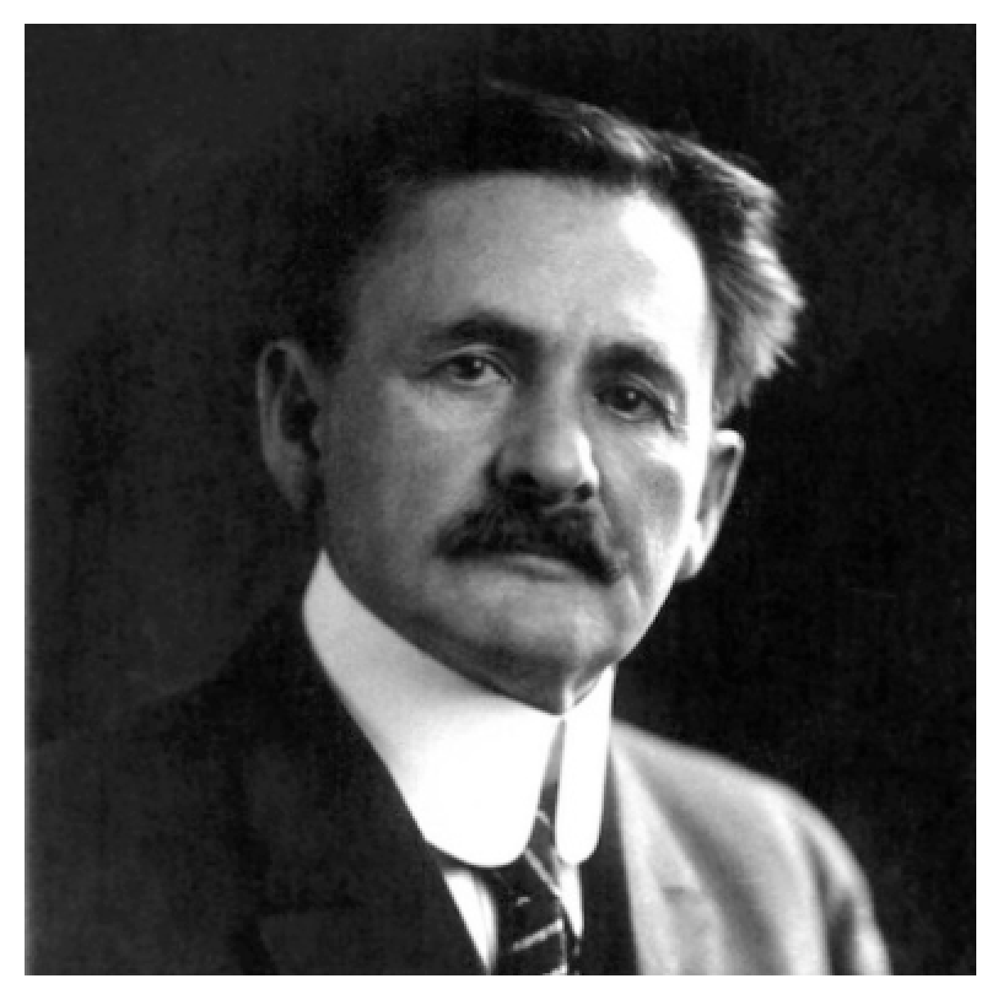
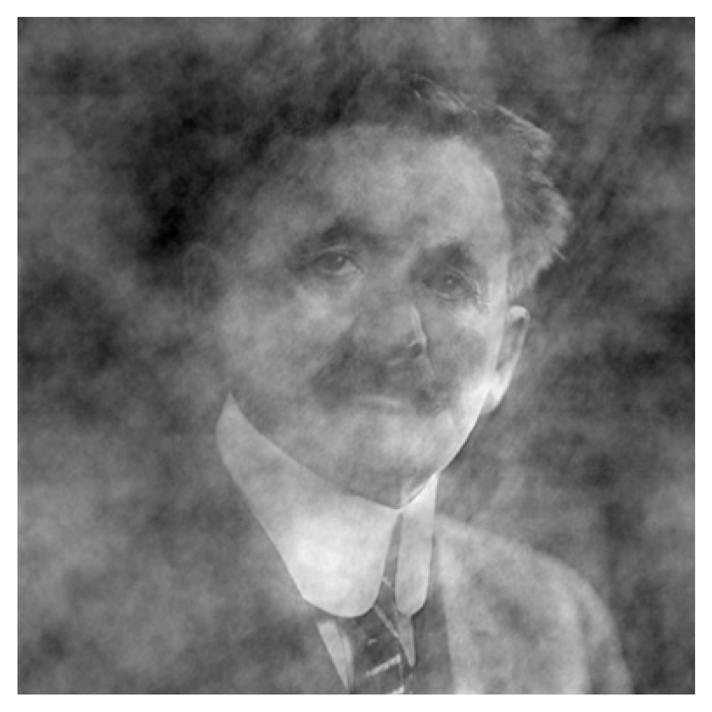
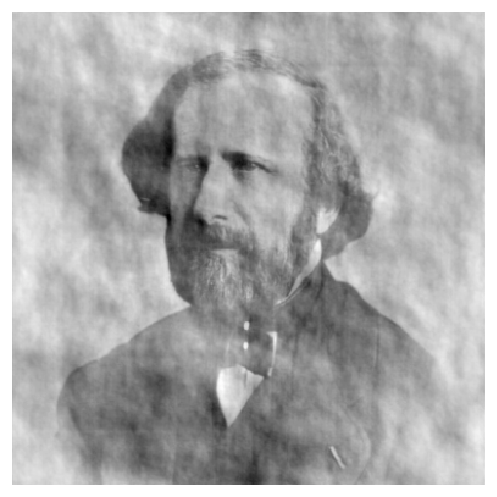

Chapter 9
Model-fitting and image reconstruction
Figure 9.2: The (u,v)plane coverage of observations of VY CMa with the VLTI and the PIONIER instrument. From .
| i1(x,y) |  |  | i2(x,y)
|
| i12(x,y) |  |  | i21(x,y)
|
Figure 9.3: Upper row: Images of two founders of
interferometry - H. Fizeau (left) and A. A. Michelson (right).
Lower row: hybrid images made from combining the
Fourier amplitudes of Fizeau and the Fourier
phases of Michelson (left) and from combining the
Fourier phases of Fizeau and the Fourier
amplitudes of Michelson (right).
Figure 9.4: Images at several epochs of the evolved star IRC+10216, showing the complex structure of the dust shells around the star. From .
Figure 9.5: Image reconstructions of the dust around the supergiant VY CMa from the 2014 image "beauty contest" [].
Figure 9.6: (Left) The Fourier plane coverage of the Betelgeuse
710nm wavelength observations.
(Right) The average power spectrum of 500 interferograms
taken on Betelgeuse at 546nm wavelength.
This data was taken using a 6-hole mask, but
fringes are only visible on the shortest 7 out of 15 baselines because the source
is resolved on longer baselines.
Figure 9.7: A subset of the calibrated visibility (left) and closure phase (center)
measurements on Betelgeuse at a wavelength of 710 nm. The visibility data is plotted
for two similar position angles of the
mask. The closure phase data is plotted for two sets of
triples containing only short baselines and two sets of triples
containing long baselines. The closure phases are labelled with the
indices (1-10) of the baselines making up the triple. From .
Figure 9.8: Contour map of the reconstructed image of Betelgeuse at 710 nm. The contours are at 1,2,10,20,30,...,90% of the peak intensity.
Figure 9.9: Image of a red supergiant star simulated using 3-dimensional radiative hydrodynamic modelling. From .
{kind=link}